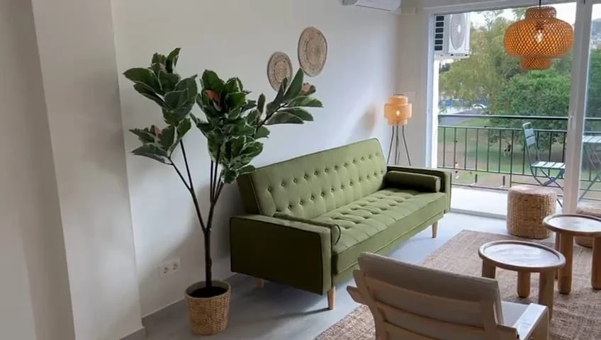

Espacios limpios, ordenados y visualmente preparados para fotos y visitas.
Volver a servicios
Radiant Clean · Servicio especializado
Una vivienda preparada se vende y alquila antes.
Preparo la vivienda para que entre por los ojos desde la primera foto y desde la primera visita. Limpieza profunda, orden visual y revisión completa para que cuando alguien la vea, la sienta cuidada antes incluso de fijarse en los detalles.
Antes de fotografías
Antes de visitas
Entrega a inquilino
Inmobiliarias y propietarios
Objetivo
Que la vivienda se vea cuidada, luminosa y fácil de imaginar como hogar.
Trabajo detallado en estancias, cocina, baños, textiles y superficies sensibles.
Una vivienda preparada acorta plazos: se enseña antes, gusta antes y se decide antes.
Para inmobiliarias y propietarios
Una vivienda cuidada se entiende mejor, se visita mejor y se recuerda mejor.
La mayoría de visitas se deciden en los primeros 30 segundos. En esos 30 segundos importa más cómo se siente el espacio que su tamaño o sus prestaciones. Por eso preparar la vivienda no es un lujo: es comercial.
Trabajo con propietarios particulares y con inmobiliarias que quieren entregar fotos y visitas con la mejor versión posible de cada inmueble.
- Revisión completaEstado general, puntos visibles y detalles que afectan a la visita.
- Puesta a puntoLimpieza profunda orientada a presentación y confianza visual.
- Entrega finalVivienda lista para enseñar, fotografiar o entregar al inquilino.
Qué incluye el servicio
Lo que se prepara para que entre por los ojos.
No es una limpieza más: es una preparación pensada para ser vista. Cada decisión tiene un porqué visual: que la cocina parezca espaciosa, que el baño parezca nuevo, que el salón invite a quedarse.
Pedir propuesta para tu viviendaLimpieza profunda integralEstancias, suelos, cristales, juntas y zonas que no se ven en visita rápida.
Cocina presentableEncimera, electrodomésticos, fregadero y mobiliario sin marcas ni grasa.
Baños "como nuevos"Sarro, juntas, espejos y mamparas tratadas a fondo para sumar percepción de calidad.
Orden visualRetirada de objetos personales que distraen, despeje de superficies y orden de armarios visibles.
Textiles y oloresCortinas, sofás y textiles aireados; eliminación de olores cerrados o de mascota.
Detalles finalesToques que se notan en foto: cojines colocados, encimeras despejadas, luz limpia.

Checklist Radiant
Orden visual para decidir más rápido.
- Limpieza profunda de estancias principales.
- Revisión de cocina, baños y zonas de paso.
- Presentación de salón, dormitorios y terraza.
- Cuidado de superficies, acabados y detalles finales.
- Preparación específica para fotos profesionales, visitas o entrega.
“Cuando Georgina prepara una vivienda antes de las fotos, se nota en las visitas. Llegan más interesados, más decididos y con mejor percepción del inmueble. Se ha convertido en parte de nuestro proceso de captación.”
Antes de empezar
Lo que más me preguntan en venta y alquiler.
Si necesitas tener la vivienda lista para una fecha concreta, dímelo y organizamos plazos contigo.
Hablar conmigo por WhatsApp¿En cuánto tiempo podéis tener la vivienda lista?
Para una vivienda media necesito uno o dos días según estado. Si tienes sesión de fotos o visita con fecha cerrada, dímelo al contactar y lo aseguro en el calendario.
¿Trabajáis con inmobiliarias en varias viviendas a la vez?
Sí. Colaboro de forma habitual con agencias que necesitan preparar varias viviendas al mes. Te organizamos un calendario fijo y tarifa pactada para que no tengas que pedir presupuesto cada vez.
¿Os ocupáis también de retirar enseres del anterior inquilino?
Coordino la retirada de enseres y ropa si lo necesitas. En cambios de inquilino es habitual cerrar todo el proceso (vaciado + limpieza + revisión) en una sola intervención.
¿Hace falta que el propietario esté presente?
No. Trabajamos con llaves o caja de seguridad y te mando foto de entrega cuando termino. Tú recibes la vivienda lista sin tener que cuadrar agendas.